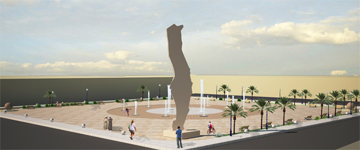
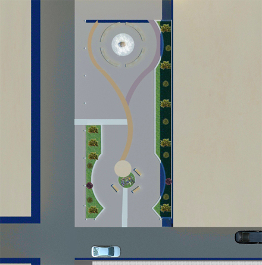
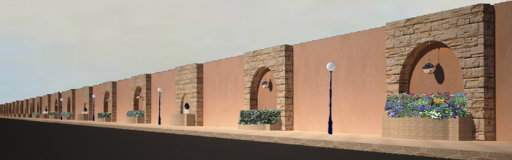
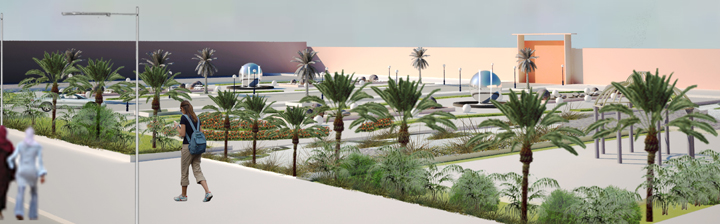

L’Agence Urbaine d’Oued Eddahab–Aousserd joue un rôle primordial dans l’amélioration du paysage urbain et architectural de la région, à travers les services fournis à ses différents partenaires locaux, dans le cadre de l’accompagnement technique et architectural.
À ce sujet, et suite à la demande de Monsieur le Wali de la région de Dakhla–Oued Eddahab, l’Agence urbaine a proposé plusieurs aménagements visant l’amélioration du paysage urbain de la ville de Dakhla.
1 — Proposition de l’aménagement paysager de la place Hassan-II
Adjacente aux deux axes structurants de la ville (avenue Hassan II et avenue Al Walae) et des grands lieux emblématiques de Dakhla (l’église catholique, la wilaya d’Oued Eddahab–Lagouira et le grand hôtel Sahara Regency), la place Hassan II joue le rôle de la place centrale de la ville. Non seulement elle accueille régulièrement les événements marquants de la ville et de la région, mais elle est aussi le lieu de rencontres et de passage principal. C’est aussi l’unique place qui comporte un repère sous forme de statue.
C’est ce qui justifie amplement la proposition d’un réaménagement de cette place pour contribuer à l’amélioration du paysage urbain de la ville.
←→ ou glisser · choisir le visuel ci-dessous · Agrandir pour plein écran

2 — Proposition de l’aménagement paysager du jardin devant l’hôtel Sahara Regency
De même, la place de l’hôtel Sahara Regency a fait l’objet d’une proposition d’aménagement paysager par l’Agence urbaine pour assurer la continuité de la mise en valeur de l’aménagement précité de la place Hassan II. Par ailleurs, la conception d’aménagement s’est basée sur la création d’un nouvel espace de loisirs et de détente pour accompagner la relance urbanistique que connaît la ville de Dakhla ces dernières années.

3 — Proposition de requalification et de traitement du mur de l’aéroport longeant l’avenue Hassan II
Le but de cette proposition est d’intégrer le mur de clôture de l’aéroport dans le paysage urbain de la ville, tout en ajoutant une touche esthétique aux axes principaux de la ville en s’inspirant de l’architecture andalouse marquant encore les quartiers centraux de la ville de Dakhla faisant face à ce mur.
Au-delà de l’aspect esthétique de cet aménagement, l’implantation de la végétation et des lampadaires le long du mur créera un espace de flânerie pour les quartiers riverains.

4 — Proposition de l’aménagement paysager de l’entrée principale de la résidence de Monsieur le Wali de la région de Dakhla–Oued Eddahab
Étant un emblème à la fois administratif et esthétique, la résidence de Monsieur le Wali a fait l’objet d’une proposition visant la requalification de son entrée principale.
Cette entrée a aussi une grande importance vu sa position stratégique le long du grand axe Al Walae, et sa proximité de l’aéroport international de Dakhla.
←→ ou glisser · choisir le visuel ci-dessous · Agrandir
